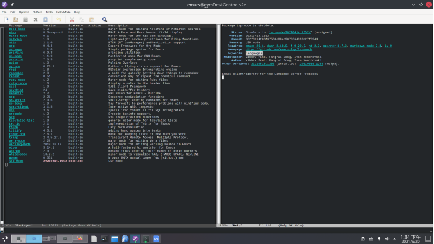
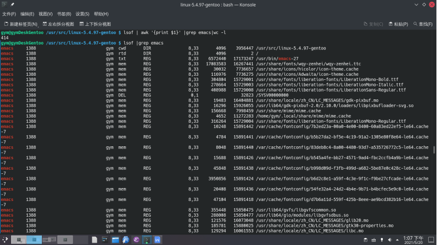

刚看到一个挺不错的blog： https://blog.tartanllama.xyz/writing-a-linux-debugger-setup/ ;
鉴于我之前费了九牛二虎之力，成功地在 emacs 用 lsp-mode 浏览 c/c++ 项目代码： https://blog.csdn.net/weixin_42417818/article/details/113076926
这次打算用 emacs 看看那个 minidbg 的源码。
没想到打开后发觉 Alt-x lsp-session-describe命令都没有，后来发觉 lsp-mode 包未装， 装后又显示 obsolete. 我按 U， 显示12个包要更新，再按 x，立即更新，完了貌似还是老样子。

然后整个人就有些崩溃了，这两天累了，字符模式下阅读 c/c++ 项目源码，有没有好点的选项？我是说带语法提示的。
前两天 Pudb 给我的感觉挺好的啊 http://guyuming76.gitee.io/personal/gentoo/emergeAnalysis3.html
再就是，我重启了机器， 还没运行emacs ，lsof 咋就开了这么多emacs 相关的东西？ 不过如果是在startx 进入桌面前, lsof 里面倒是没有 emacs.
lsof | awk '{print $1}' | grep emacs | wc -l
lsof | awk '{print $1}' | uniq | wc -l
#统计lsof 结果第一列 unique count，刚学会这种用法，记录一下

emacs 后面的 Lisp 读起来不直观，但这个东西后面的“runtime” 肯定简单，贴近一个Lambda Calculus 模型，你若是要一个人同时包揽了解释器和编辑器的活，可能会选择 Lisp; 相对起来 Python 又是面向对象，又是...
问题 emacs 菜单上太多干扰了，还有读邮件，我真的需要在一个字符模式下读邮件吗？
记录些链接：
http://daiyuwen.freeshell.org/gb/rol/roots_of_lisp.html
https://chrismennie.ca/EMACS-Conceptual-Architecture.pdf